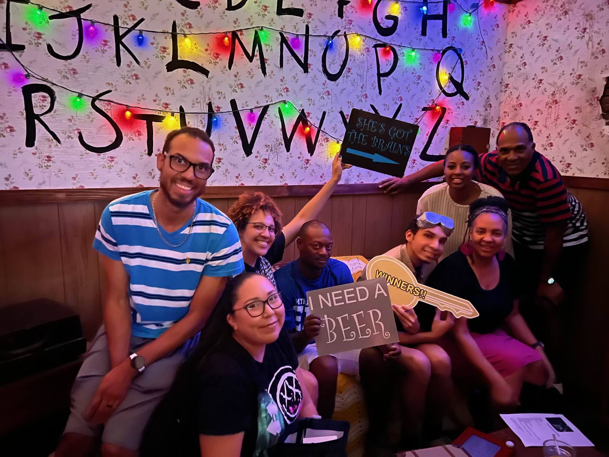

Hobbies
Sports

Chris has been a long-time fan of many sports, including basketball, football, and baseball (as pictured above). He spent over two decades playing basketball at a high level, from middle school well into his thirties. His talent is undeniable, and he stands today as one of the most successful athletes in our family.
New Experiences
As he grew older, Chris begun branching out from what he knew that he loved into unfamiliar territory. Snowboarding, gaming, golfing, escape rooms (as pictured above); if it's something he hasn't tried, there's a very strong chance he's the one who's down to do it with you.
Family

Spending time with family has always been one of Chris's priorities. With family present in several states between him and his wife, Chris always puts his best foot forward when it comes to putting family first, always. Some of the many activities we've experienced together as a family include ice skating, rock climbing, snowboarding, music festivals, and obstacle courses, with many more activities to come.